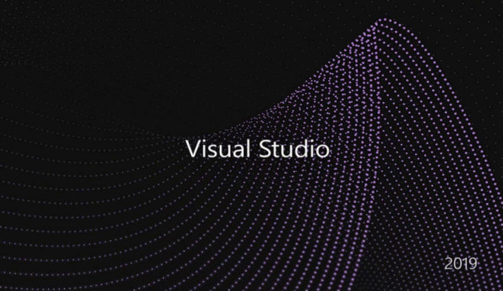

Программы контроля, тестирования и диагностики, которые используются для проверки правильности функционирования устройств компьютера и для обнаружения неисправностей в процессе эксплуатации;
указывают причину и место неисправности;
Программы-драйверы, которые расширяют возможности операционной системы по управлению устройствами ввода-вывода, оперативной памятью и т.д.;
с помощью драйверов возможно подключение к компьютеру новых устройств или нестандартное использование имеющихся;
Программы-упаковщики (архиваторы), которые позволяют записывать информацию на дисках более плотно, а также объединять копии нескольких файлов в один архивный файл;
Прикладные программы
Системы программирования
PASCALABS.NET;
Visual Studio 2019 - Линейка продуктов компании Microsoft, включающих интегрированную среду разработки программного обеспечения и ряд других инструментальных средств.
Данные продукты позволяют разрабатывать как консольные приложения, так и игры и приложения с графическим интерфейсом,
в том числе с поддержкой технологии Windows Forms, а также веб-сайты, веб-приложения, веб-службы как в родном,
так и в управляемом кодах для всех платформ,
поддерживаемых Windows, Windows Mobile, Windows CE, .NET Framework, Xbox, Windows Phone .NET Compact Framework и Silverlight.;

PyCharm - Интегрированная среда разработки для языка программирования Python.
Предоставляет средства для анализа кода, графический отладчик, инструмент для запуска юнит-тестов и поддерживает веб-разработку на Django. PyCharm разработана компанией JetBrains на основе IntelliJ IDEA.;